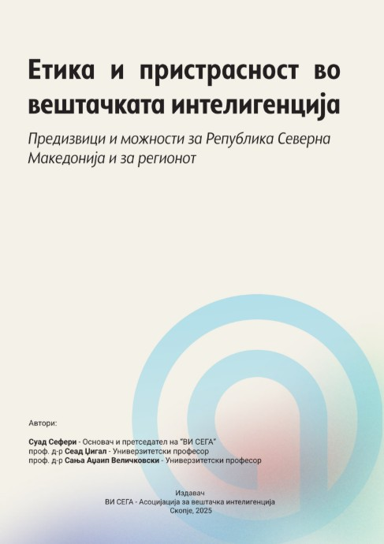
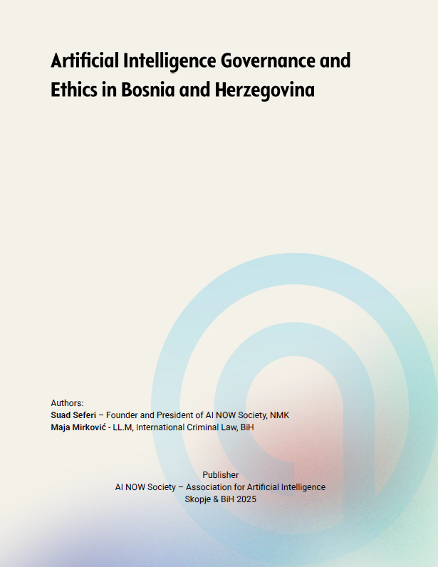

Suad Seferi is an AI Consultant and Strategist based in Skopje, North Macedonia — founder of AINOW Society, the first association for artificial intelligence in the country.
He advises businesses, public institutions, and educational organizations on AI adoption, AI readiness, digital transformation, cybersecurity, and AI ethics.
Suad specializes in helping organizations design and implement AI strategies that align with their business goals, operational needs, and security requirements.
Author of two influential books on artificial intelligence, digital transformation, and practical AI.
A long-running LinkedIn newsletter on practical AI adoption, ethics, and digital transformation — written for practitioners and decision-makers.
Open-source work building toward AI literacy and Macedonian-language AI — shipped with the AINOW Society team.
Invited as a speaker and panelist at regional and international AI conferences on AI ethics, digital transformation, and AI in media and education.
Featured in multiple outlets on AI adoption, AI ethics, and digital transformation — books, workshops, and community initiatives through AINOW Society.
Two white papers on ethical risks and bias in AI across the Balkans — regional conditions, EU benchmarks, and practical recommendations for responsible AI use.
Suad produced two white papers on ethical risks and bias in AI. The first covers North Macedonia and the wider region, with comparisons to EU countries, prepared with Sanja Adzaip and Sead Dzigal. The second focuses on Bosnia and Herzegovina, prepared with Maja Mirković.
The research reviews education, public institutions, media, and society — showing local conditions, regional patterns, and EU benchmarks. Practical recommendations support decision-makers, researchers, educators, and activists.
Download both papers ↗
Cited by the Council of Europe as a reference for policy and regulatory analysis of AI in the media of North Macedonia. With Sanja Adzaip and Sead Dzigal.

Focused review of education, public institutions, media, and society in BiH. Prepared with Maja Mirković for the Western Balkans Info Hub.
An interactive starting point — map your organizational maturity against six strategic pillars. Your score maps to a tier, not a verdict.
Foundations in place but lack consistency. Prioritize governance.